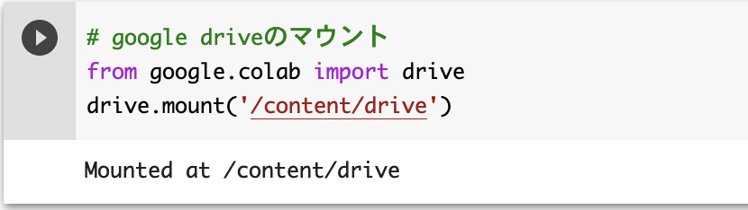
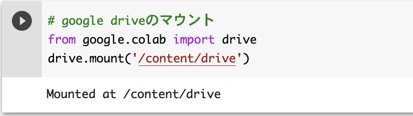
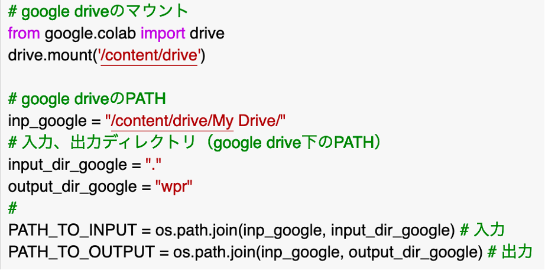
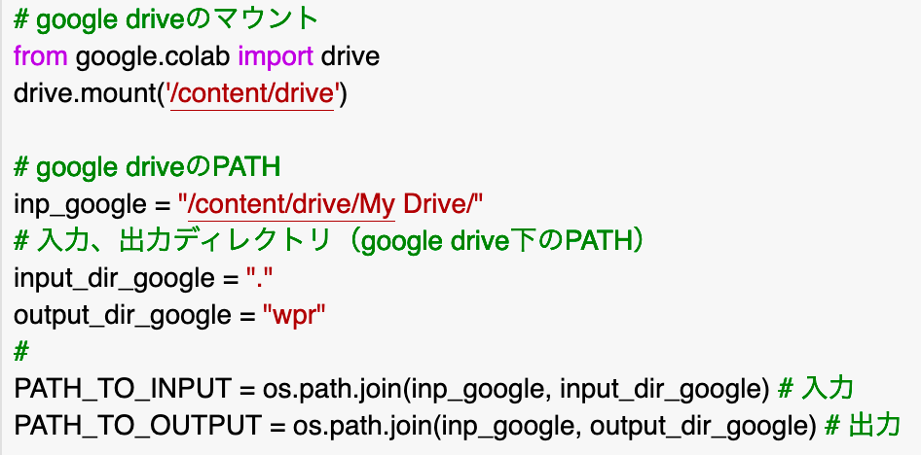
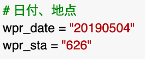
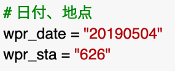
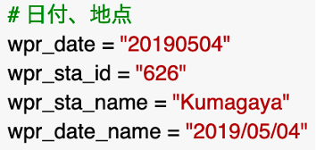
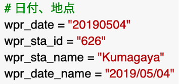

matplotlib：番外編 ウィンドプロファイラ
Google colaboratoryを用いたウィンドプロファイラ（WPR）データ読み込み、作図
（気象業務支援センターのCDに収録されたWPRデータを解析するためのプログラム）
ここでは、気象業務支援センターのCDに収録されたウィンドプロファイラ（WPR）データを読み込み、作図を行うための方法を紹介しています。ローカルで解析・作図を行うために作成したread_wpr.py、map_wpr.py（github）と同じことをGoogle Colaboratory上で実現します。これらのプログラムの実行にはローカルにpython環境が必要ですが、実行環境を用意できない方や、どこでも実行環境を利用したい方向けに、webブラウザ上で利用できるGoogle Colaboratoryを使い、WPRデータを読み込み、作図を行うための手順を記しています。なお、Google Colaboratoryの利用にはGoogleアカウントが必要です。
作成者：山下陽介（NIES←JAMSTEC）
準備
プログラムの置き場所
Google Colaboratoryの利用
Google Colaboratoryは、ブラウザ上からpythonプログラムを記述し実行できるようにしたものです。Googleアカウントを持っていれば、無料で利用できます。
Google Colaboratoryを利用するには、https://colab.research.google.com/にアクセスします。まずは、下側に表示される[ノートブックを新規作成]をクリックします。
Googleドライブのマウント
googleアカウントを持っていれば、Googleドライブにファイルを置くことができます。無料で使える容量には制限がありますが、試しに使う程度なら問題ないでしょう。まずは、Google ColaboratoryからGoogleドライブのファイルにアクセスする手順に慣れておきます。
下記のコードを入力し、左側の実行ボタンを押します。
アカウントを選択し、Googleアカウントへのアクセスを許可します。成功すると、以下のように、マウント成功の表示が出てきます。

下記のコードを入力し、左側の実行ボタンを押します。
# google driveのマウント
from google.colab import drive
drive.mount('/content/drive')
アカウントを選択し、Googleアカウントへのアクセスを許可します。成功すると、以下のように、マウント成功の表示が出てきます。

解析と作図
WPRデータを読み込むプログラム取得
公開されているread_wpr.ipynbにアクセスします。
[ファイル] - [ドライブにコピーを保存]を選び、自分のGoogleドライブにコピーします。
ここでは、input_dir_googleを”.”（同じ場所）にしたので、Google Driveのトップにウィンドプロファイラのデータを置くことになります。output_dir_googleは”wpr”としたので、Google Driveのトップの下に./wpr/というディレクトリが作成され、出力データが格納されます。

[ファイル] - [ドライブにコピーを保存]を選び、自分のGoogleドライブにコピーします。
ここでは、input_dir_googleを”.”（同じ場所）にしたので、Google Driveのトップにウィンドプロファイラのデータを置くことになります。output_dir_googleは”wpr”としたので、Google Driveのトップの下に./wpr/というディレクトリが作成され、出力データが格納されます。

- Google Driveのトップが/content/drive/に対応します。
- 入力データを置くinput_dir_google、出力データが格納されるoutput_dir_googleは、Google Driveのトップからの相対パスで指定します。
データの準備と実行
input_dir_googleを”.”としたので、Google Driveのトップに
wpr（日付）.（地点番号）
のようなファイル名になっているウィンドプロファイラのデータを置きます。
日付、地点を対応するものに書き換え、実行ボタンを押します。

日付、地点を対応するものに書き換え、実行ボタンを押します。

作図
公開されているmap_wpr.ipynbにアクセスします。
日付、地点を作成したデータと同じものに書き換えます。wpr_sta_nameは表示される地点名、wpr_date_nameは表示される日付です。実行ボタンを押したら作図できます。

日付、地点を作成したデータと同じものに書き換えます。wpr_sta_nameは表示される地点名、wpr_date_nameは表示される日付です。実行ボタンを押したら作図できます。

プログラム解説
WPRデータを読み込むプログラム
WPRデータを読み込むプログラム（read_wpr.ipynb）では、WPRデータの読み込みとcsvファイルへの書き出しを行います。WPRデータの読み込み部分は、ReadWPR関数としており、メインプログラムから呼び出します。戻り値となる時刻データの個数はnmax、時刻インデックスはtindex、データはdataに格納されます。
# ReadWPR Classの初期化 wpr = ReadWPR(input_filedir) # ReadWPR.retrieveメソッドを使いデータの取得 nmax, tindex, data = wpr.retrieve()格納されたデータ（data）には、アンテナからの高度、品質管理情報、風向、風速、鉛直速度、S/N比が入っています。そのうち、品質管理情報をdata_qua、風向をdata_dir、風速（m/s）をdata_spd、鉛直速度（m/s）をdata_wとして、それぞれファイルに書き出します。
# 時刻データ書き出し pd.Series(data[nmax,:,0]).to_csv(output_filedir_height, header=None) pd.Series(np.ravel(tindex)).to_csv(output_filedir_time, header=None) # 時間ー高度面のデータ書き出し data_qua = pd.DataFrame(data[:,:,1], index=tindex, columns=data[nmax,:,0]) data_dir = pd.DataFrame(data[:,:,2], index=tindex, columns=data[nmax,:,0]) data_spd = pd.DataFrame(data[:,:,3], index=tindex, columns=data[nmax,:,0]) data_w = pd.DataFrame(data[:,:,4], index=tindex, columns=data[nmax,:,0]) * 0.1 data_qua.to_csv(output_filedir_qua) data_dir.to_csv(output_filedir_dir) data_spd.to_csv(output_filedir_spd) # [m/s] data_w.to_csv(output_filedir_w) # [m/s]
作図を行うプログラム
作図を行うプログラム（map_wpr.ipynb）では、出力された時間―高度面のcsvファイルを読み込み、matplotlibを使って水平風速を矢羽で鉛直速度を色で描画します。まずは、read_wpr.ipynbで書き出された時間―高度面のデータを読み出します。
作図の際にx軸、y軸のデータとして用いられる時間（time）、高度（height）データは１次元データであるが、作図プログラムに合わせ２次元のx、y軸メッシュデータに変換します。
散布図を描くツールax.scatterでは、１次元のデータを入力します。オプションのcmapは色テーブルを指定するもので、marker='s'は正方形、s=4はマーカーの大きさ、vmin、vmaxは色を変化させる範囲を表します。
# ファイル読み込み wd = pd.read_csv(input_filedir_dir, index_col=[0], parse_dates=[0]) # 風向 ws = pd.read_csv(input_filedir_spd, index_col=[0], parse_dates=[0]) # 風速 w = pd.read_csv(input_filedir_w, index_col=[0], parse_dates=[0]) # 鉛直速度 qua = pd.read_csv(input_filedir_qua, index_col=[0], parse_dates=[0]) # データ品読み込んだデータの品質管理情報を使い、欠損値、疑問値を除きます。また矢羽の作図プログラムに合わせ、風向、風速データを東西風速、南北風速に変換します。取り出された鉛直速度データと変換後の東西風速、南北風速データは、いずれも高度がx軸、時間がy軸になっているため、転置（T）メソッドを使いx軸が時間、y軸が高度になるように変換しておきます。
作図の際にx軸、y軸のデータとして用いられる時間（time）、高度（height）データは１次元データであるが、作図プログラムに合わせ２次元のx、y軸メッシュデータに変換します。
# 時間ー高度面 time = w.index height = np.array(w.columns, dtype=float) # 文字列として読み込まれたものを変換 # 品質管理情報を使い、欠損値、疑問値を除く wd = wd[qua == 0] ws = ws[qua == 0] w = np.array(w[qua == 0]).T # 東西風速、南北風速への変換 u = np.array(ws * np.cos((270.0 - wd) / 180.0 * np.pi)).T v = np.array(ws * np.sin((270.0 - wd) / 180.0 * np.pi)).T # x, y軸メッシュデータ X, Y = np.meshgrid(time, height)次が作図の部分です。最初にプロットエリアを定義しサブプロットを作成します。matplotlibのモジュールは、最初にimport matplotlib.pyplot as pltとしてインポートしているため、pltとして参照できます。
# プロットエリアの定義 fig = plt.figure(figsize=(12, 5)) ax = fig.add_subplot(1, 1, 1)作成したサブプロットは、作図するためのツール（メソッド）を持っています。まずは矢羽を描くツールax.barbsを使いサブプロット上に矢羽を描きます。デフォルトの時間軸の方向は左から右ですが、方向を右から左へ変更するため、ax.invert_xaxis()を行います。矢羽を描くツールがx座標、y座標、東西風u、南北風vの１次元データを利用するため、引数の配列も１次元に合わせる必要があります。X.flatten()は、x座標の２次元データを１次元データに変換するツールで、y座標、東西風u、南北風vも同様に１次元データに変換します。 zorderは描画の順番で、数字が大きいほど上に描かれることを意味します。
ax.invert_xaxis() # 時間軸を右から左へ ax.barbs(X.flatten(), Y.flatten(), u.flatten(), v.flatten(), sizes=dict(emptybarb=0.0), length=2.5, color='k', linewidth=0.8, zorder=2)鉛直速度を描く部分です。ここでは、散布図のマーカーとして描く方法と陰影として描く方法を提供しています。opt_scatter = Trueとするとマーカー、opt_scatter = Falseとすると陰影になります。
散布図を描くツールax.scatterでは、１次元のデータを入力します。オプションのcmapは色テーブルを指定するもので、marker='s'は正方形、s=4はマーカーの大きさ、vmin、vmaxは色を変化させる範囲を表します。
cmap = copy.copy(mpl.cm.get_cmap("coolwarm")) # 色テーブル
cs = ax.scatter(X.flatten(), Y.flatten(), c=w.flatten(),
marker='s', s=4,
vmin=-4, vmax=4,
cmap=cmap,
zorder=1)
陰影を描くツールax.contourfでは、２次元のデータを入力します。先ほど作成したX、Yの２次元メッシュデータと鉛直速度wの２次元データを使います。levelsオプションは陰影を描く値で、−４から４まで１毎に変化させます。それに合わせvmin=-4、vmax=4を設定します。色テーブルは、cmapオプションにcmap=cmapとして与えます。extend='both'は、色テーブルの範囲の上下も値を描くことを表しています。色テーブルは"coolwarm"を使い、範囲の上限を上回った場合と下限を下回った場合の色は、色テーブルが格納されたcmapに対して設定します。ここでは、cmap.set_over('r')で上限を上回った場合に赤色、cmap.set_under('b')で下限を下回った場合に青色を設定しています。デフォルトでは欠損値の周辺が滑らかに補完されてしまうため、欠損値の周辺が補完されないようにcorner_mask=Falseとしています。
cmap = copy.copy(mpl.cm.get_cmap("coolwarm")) # 色テーブル
cmap.set_over('r') # 上限を上回った場合に赤
cmap.set_under('b') # 下限を下回った場合に青
cs = ax.contourf(X, Y, w,
levels=[-4, -3, -2, -1, 0, 1, 2, 3, 4],
vmin=-4, vmax=4,
cmap=cmap, extend='both',
corner_mask=False,
zorder=1)
縦方向のカラーバーを右端に付け、ラベルを描きます。
# カラーバー
cbar = fig.colorbar(cs, orientation='vertical')
cbar.set_label("Vertical velocity (m/s)", fontsize=12)
図の体裁を整えるため、x軸とy軸の表示を変更します。まずx軸の目盛り線を付ける間隔は、ax.xaxis.set_major_locator、およびax.xaxis.set_minor_locatorで設定します。引数として与えているticker.MultipleLocatorには、ラベルを付ける間隔を日単位で与えます。ここでは、x軸の大目盛り線は３時間毎（1日の1/8）、小目盛り線は１時間毎（1/24）に付けています。x軸のラベルの書式を変更するため、ax.set_xticklabelsの設定を変更し文字サイズを小さく（size="small"）、ラベルは斜めにしています（rotation=70）。目盛り線ラベルの書式も変更しており、大目盛り線ラベルはax.xaxis.set_major_formatter、小目盛り線ラベルはax.xaxis.set_minor_formatterで変更します。ここでは、大目盛り線ラベルの表示形式は'%m/%d %Hh'（月/日 時h）とし、小目盛り線にはラベルを付けない（ticker.NullFormatter）設定にしています。
# x軸の目盛り
ax.xaxis.set_major_locator(ticker.MultipleLocator(1 / 8))
ax.xaxis.set_minor_locator(ticker.MultipleLocator(1 / 24))
ax.set_xticklabels(ax.get_xticklabels(), rotation=70, size="small")
ax.xaxis.set_major_formatter(mdates.DateFormatter('%m/%d %Hh'))
ax.xaxis.set_minor_formatter(ticker.NullFormatter())
y軸は、大目盛り線を1000 m毎、小目盛り線を200 m毎に付けます。
# y軸の目盛り ax.yaxis.set_major_locator(ticker.MultipleLocator(1000)) ax.yaxis.set_minor_locator(ticker.MultipleLocator(200))最後にタイトルを付け、プロット範囲全体の大きさを少し小さめに調整してから、ファイルに書き出します。
# タイトル ax.set_title(title, fontsize=20) # プロット範囲の調整 plt.subplots_adjust(hspace=0.8, bottom=0.2) # ファイルへの書き出し plt.savefig(output_filename, dpi=300, bbox_inches='tight')
[top]